Learn more about Web Development
Start Web devloping
Learn more about Web Development
Start Web devloping
 Start app devloping
Start app devloping
Minecraft is back for the Hour of Code with a brand new activity! Journey through Minecraft with code.
Explore and build underwater worlds with code.
 Start activety
Start activety
Journey through Minecraft with code.
 Start activety
Start activety
 Start activety
Start activety
 Start activety
Start activety
Don't have Internet?Download the offline version of Minecraft Adventurer.
Learn more about MinecraftHelp A.I. clean the oceans by training it to detect trash! Learn about training data and bias, and how AI can address world problems.View lesson plan.
Create your own app in JavaScript using block based programming. Or take your skills to the next level with text-based programming.
This self-paced module introduces foundational concepts of computer programming, which unlocks the ability to make rich, interactive apps. This unit uses JavaScript as the programming language, and App Lab as the programming environment to build apps, but the concepts learned in these lessons span all programming languages and tools.
Unit 2: Web Development Grades 7 - 9 In Unit 2, students are empowered to create and share the content on their own web pages. They begin by thinking about the role of the web, and how it can be used as a medium for creative expression. As students develop their pages and begin to see themselves as programmers, they are encouraged think critically about the impact of sharing information online and how to be more critical content consumers. They are also introduced to problem solving as it relates to programming, as they learn valuable skills such as debugging, commenting, and structure of language. At the conclusion of the unit, students compile their work to create a personal website they can publish and share.
Start activety
A charming mobile coding game that takes learners on an exciting adventure, while teaching the fundamentals of coding, like algorithms, pattern recognition, sequences, loops and conditionals. (for all ages)
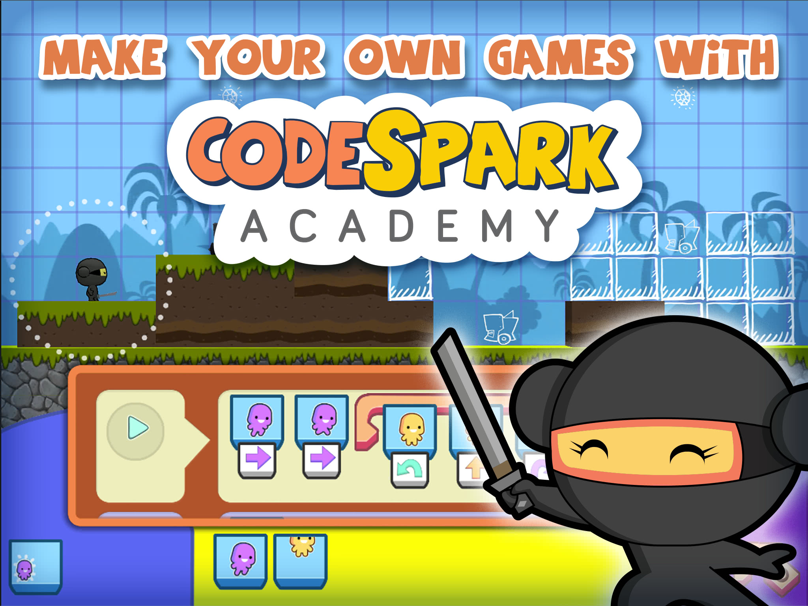 codeSparkAward-winning learn-to-code platform for kids ages 5-9. Solve puzzles and create games with The Foos while learning to code. Note: codeSpark is offering a free 3-month trial. Parent's email address and credit card information are required at signup. (for pre-readers through Grade 5)
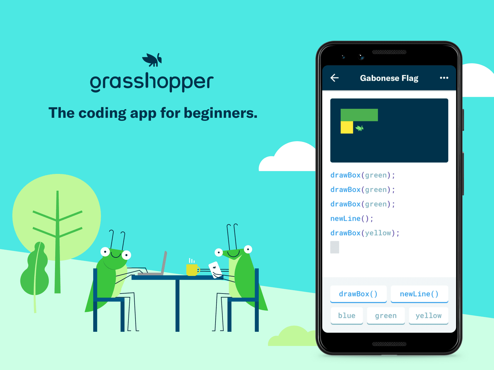 GrasshopperLearn coding with fun, quick lessons on your phone that teach you to write real JavaScript. A Code with Google Program. (for middle school and up)
No screen, no problem! We’ve put together a ‘sampler’ of quick, fun CS activities you can do without a device. Have a family Dance Party party while learning about events, or ‘program’ each other to draw pictures!
Learn computer science by trying the lessons below at your own pace! Learn to create computer programs, develop problem-solving skills, and work through fun challenges! Make games and creative projects to share with friends, family, and teachers.
 Start activety
Start activety
Learn computer science by trying the lessons below at your own pace! Learn to create computer programs, develop problem-solving skills, and work through fun challenges! Make games and creative projects to share with friends, family, and teachers.
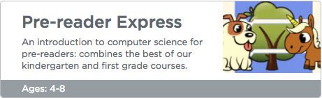 Start activetyThis 20-hour course covers the core computer science and programming concepts in courses 2-4. The course is designed for use with ages 10-18. Check out courses 2-4 for a more complete experience!
Start activety
Let's learn Hello Ruby- The world's most whimsical way to learn about computers, technology and programming. Activities on a range of CS topics, like the ability to decompose a problem, spot patterns, think algorithmically, debug problems and work together. (for ages 4-10)

Let's learn CS Unplugged- A collection of free teaching material that teaches computer science through engaging games and puzzles that use cards, string, crayons and lots of running around. (for ages 5-14)
Kodu lets kids create games on the PC and Xbox via a simple visual programming language. Kodu can be used to teach creativity, problem solving, storytelling, as well as programming. Anyone can use Kodu to make a game, young children as well as adults with no design or programming skills. Kodu for the PC is available to download for free. Kodu for the Xbox is also available in the USA on the Xbox Marketplace, in the Indie Games channel for about $5. Ages 8+ | Windows, xBox
 Try activety
Try activety
KIBO KinderLab Robotics Kids build their own robot with KIBO, program it using wooden blocks, and decorate it with arts and crafts materials - all without a PC, tablet, or smartphone. KIBO invites playful learning and children's creativity and imagination. Curriculum for schools, activities for the home, design journals and workbooks are also available. Ages 4 to 7 | Robot purchase
 Try activity
Try activity
Ozobot is the tiny robot that makes coding and computer science fun and easy to learn. Choose from a wide variety of STEM lessons and activities ranging from kindergarten to high school grade levels. Whether your students are novices or experts, Ozobot will keep them engaged for hours of learning and fun. Not an experienced programmer yourself? Not a problem! Simple instruction guides, how-to videos and introductory lessons will make you an Ozobot expert in no time! All ages | Modern web browsers
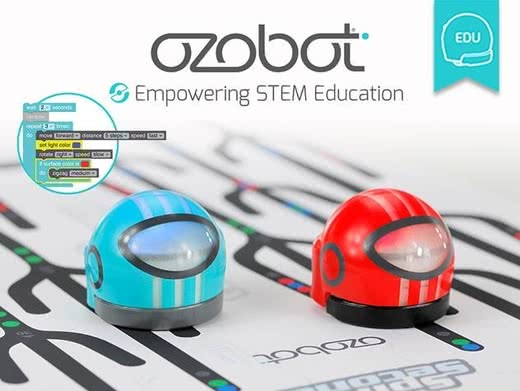 Try activetyBirdBrain Technologies The Finch Robot makes coding tangible in many programming languages ranging from Kindergarten to College-level computer science. The Hummingbird Robotics Kit is comprised of lights, sensors and motors, allowing students to build a robot out of any materials. Both of these products empower students to take ownership of their technical and creative skill sets and engage in flexible problem-solving activities. Ages 8+ | Robot purchase
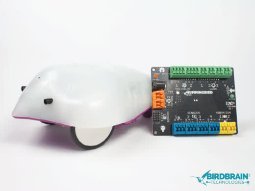 Try activityCoding with Dash & Dot Dash & Dot are robots that help kids learn the fundamentals of problem solving and coding while having fun. Download our four free iPad apps to control the robots. Use Path to learn basic sequencing and Blockly to start creating programs for Dash & Dot. Create programs for the robots to deliver a message for you, transform into a creature, and follow you around! Elementary + | iPad
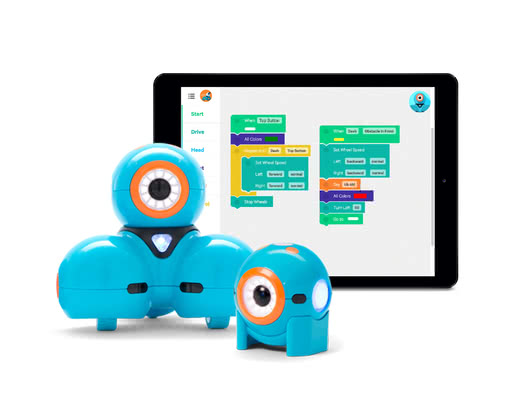 Try activitySphero Edu Designed to inspire curiosity, creativity, and invention through connected play and coding, SPRK+ is far more than just a robot. Powered by the Sphero Edu app, you can easily learn programming, complete hands-on activities, and share your creations with the community. Learning is evolving. Get on the ball. Ages 8+ | Robot purchase
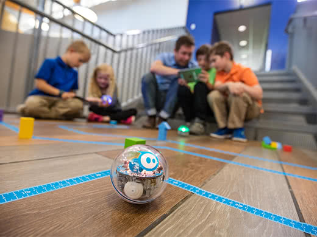 Try activitymicro:bit The micro:bit is a fun, handheld, easily programmable computer that uses a web browser to program in blocks, JavaScript or Python. The free, built-in web simulator allows students to run their program with or without connecting to a micro:bit. Simplicity and ease-of-use make micro:bit perfect for beginners while also having advanced features for experienced programmers and makers. Elementary + | Modern web browsers
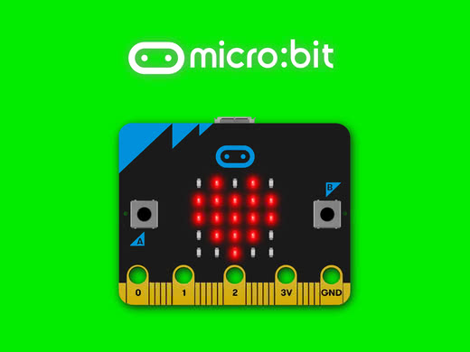 Try activityLEGO Education Build and code with the ultimate playful learning experience. The endless flexibility of LEGO bricks and the open-ended nature of our curriculum and coding software allows students to explore and develop their ideas as far as their curiosity will take them. We empower teachers with the tools for creating and delivering the most engaging lessons in STEM for every student. Middle school + | Robot purchase
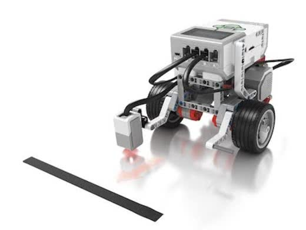 Try activityLearning Resources Never coded before? No problem! Botley™ the Coding Robot is ready to use right out of the box and will have you coding in minutes. Botley can be introduced to children as young as 5, and with advanced features, can grow with them as well. Botley is completely screen free – no phone or tablet required. Code Botley up to 120 steps, loop him and program him to go around objects with if/then logic. Botley can follow black lines, too – and even has hidden features to unlock! Ages 5-10 | Robot purchase
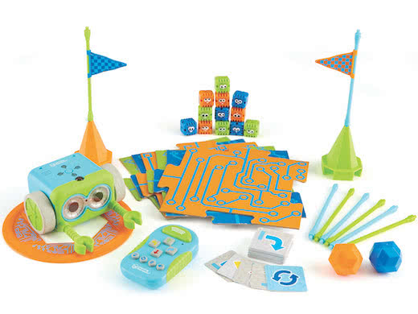 Try activityRoboMind Academy Students learn the basics of programming by controling their own virtual robot. The online course is fully self-contained with short presentations, movies, quizzes and automatic guidance/hints to help with the programming exercises. Ages 8-13 | Modern web browsers, Mobile web
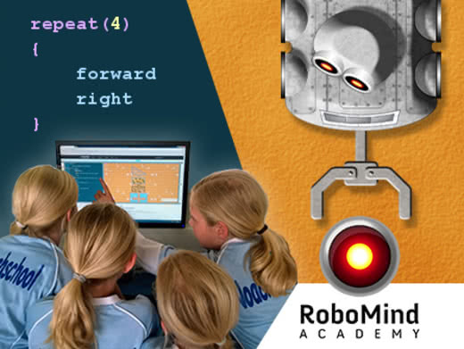 Try activityKhan Academy Learn how to use HTML and CSS to make webpages. Through a series of interactive challenges and projects, you'll learn how to use HTML to create headings, lists, tables, and more, plus use CSS to change the color, font, and layout of your page. Ages 12+ | Modern web browsers
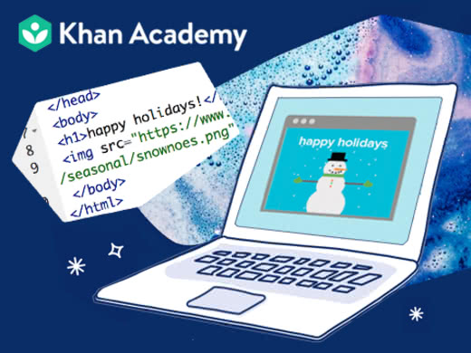 Try activityw3schools.com Learn to create websites on your own computer. Learn the server basics in less than a day. Learn to add databases to your website Ages 12+ | Modern web browsers
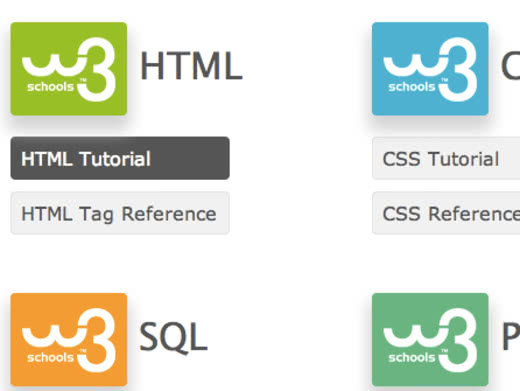 Try activity How do you make your website see in pdfEduCode Academy Enable your students to learn the basics of HTML and CSS by making delicious treats in a virtual bakery competing with Supreme Chef Horus for best honors. Our self-directed, fully immersive and fun micro-lessons and exercises using story rich videos and real world problem solving will teach and engage your students for hours with just a facilitator to help move them along. Ages 12+ | Modern web browsers
 Try activity
Try activity
Create & Learn Learn Python, the most popular programming language for AI, Data Science, and many other applications. The Create & Learn Python for AI course covers the basics of Python programming, incluing elements relevant to AI. Grades 5+ | Modern web browsers
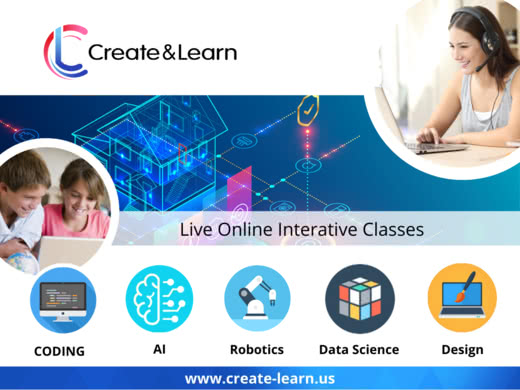 Try activityGrok Learning An introductory course using the programming language Python for people with no programming experience. Our unique mix of introductory content and challenges will bring you to a thorough understanding of Python and programming itself. We've taught this content to students of varying ages from diverse backgrounds and we're sure it'll suit you too. Middle school + | Modern web browsers
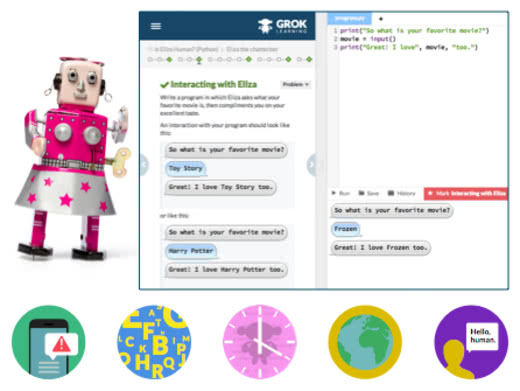 Try activityEducative Learn Python 3 for free with this interactive course, and get a handle on the most popular programming language in the world. Join us on an interactive journey through the syntax and functionality of Python. Fun quizzes and coding challenges are included. Grades 9+ | Modern web browsers
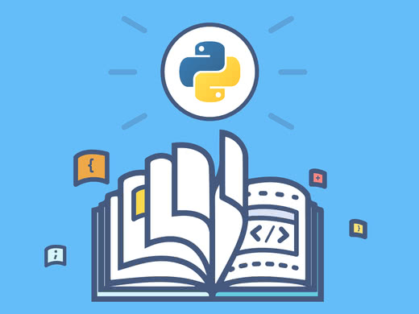 Try activityCodesters Codesters is built for teaching coding in schools. Our project-based lessons ensure that students learn core coding skills while they create engaging, interactive programs. Our unique coding environment makes text-based coding easy and accessible for students in middle grades – even those with no block-coding experience. And Codesters eases the burden on teachers by providing built-in course management, automatic feedback, lesson plans, and more. Grades 4-10 | Modern web browsers
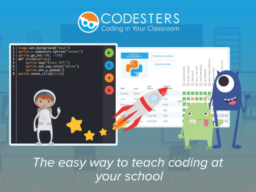 Try activityDefeat ogres to learn Python or JavaScript in this epic programming game! Middle school + | Modern web browsers
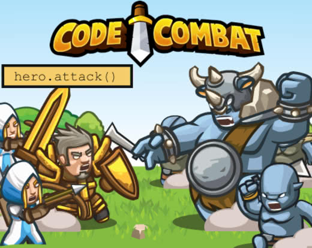 Try activityKhan Academy Learn the basics of JavaScript programming while creating fun drawings with your code. Do it on your own or with your class! Middle school + | Modern web browsers
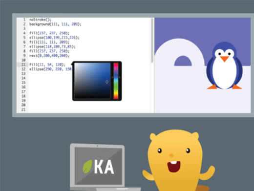 Try activityCodecademy is an interactive, student-guided introduction to the basics of CS through JavaScript that's used by tens of millions of students around the world. We've prepared a no-hassle Hour of Code experience with accompanying quizzes, slides, and a completed project for students at the end. High school | Modern web browsers. iOS, Android apps
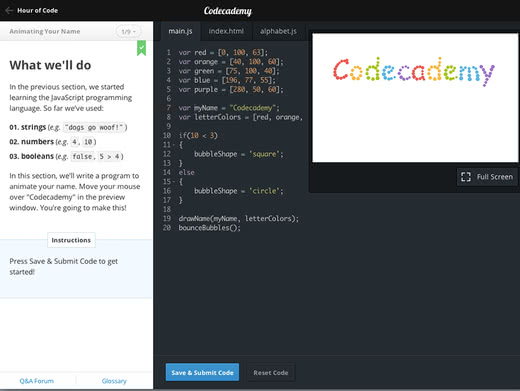 Try activity-------------------------------------------------------------------------------------------------------------------------------------
 for supporting our vision and mission to ensure every child has the opportunity to learn computer science and the skills to succeed in the 21st century.
Thanks for see my website.
for supporting our vision and mission to ensure every child has the opportunity to learn computer science and the skills to succeed in the 21st century.
Thanks for see my website.